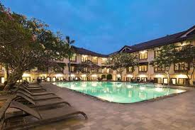
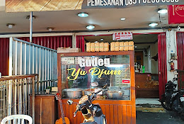

Experience Indonesia
Dari Candi Borobudur hingga Gunung Bromo, Pulau Jawa menawarkan sejarah, budaya, dan alam yang luar biasa.
Mulai Petualangan
Temukan hotel terbaik untuk beristirahat di tengah hiruk pikuk kota atau tenangnya pegunungan Jawa.
Lihat Detail
Dari pantai selatan hingga pegunungan tinggi, setiap sudut Jawa menyimpan kisah dan keindahan alamnya.
Lihat Detail
Nikmati cita rasa khas seperti gudeg, rawon, dan sate khas Madura yang menggugah selera.
Lihat Detail